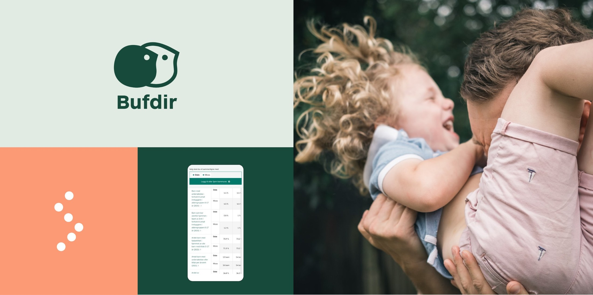
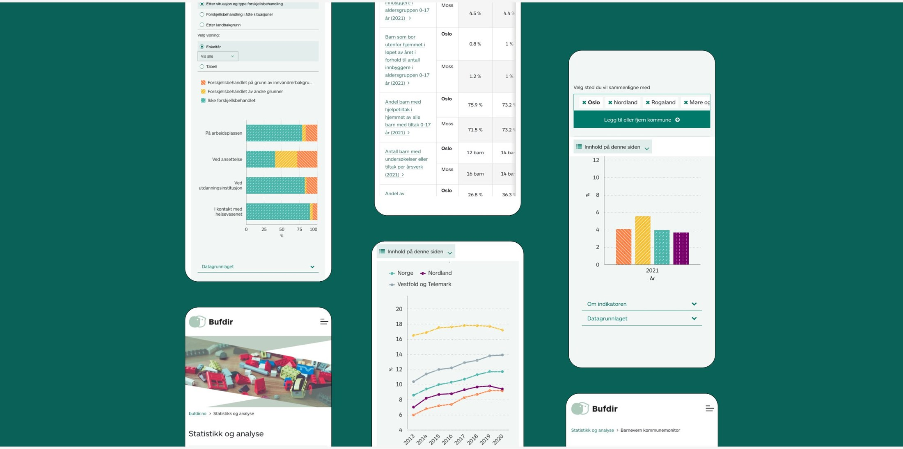
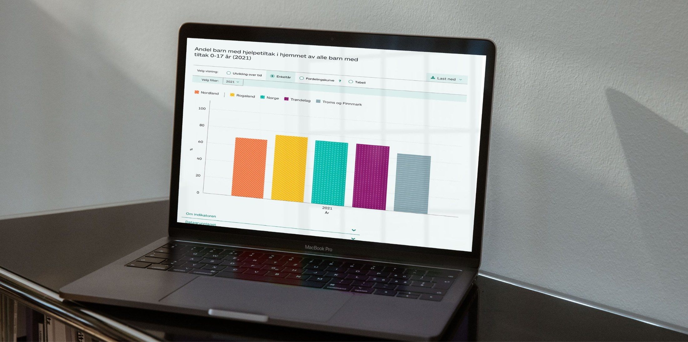
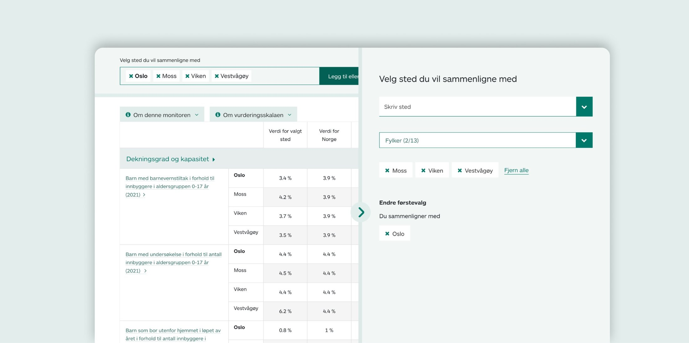
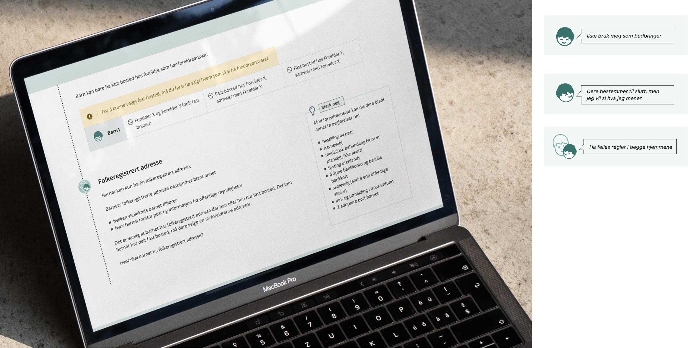
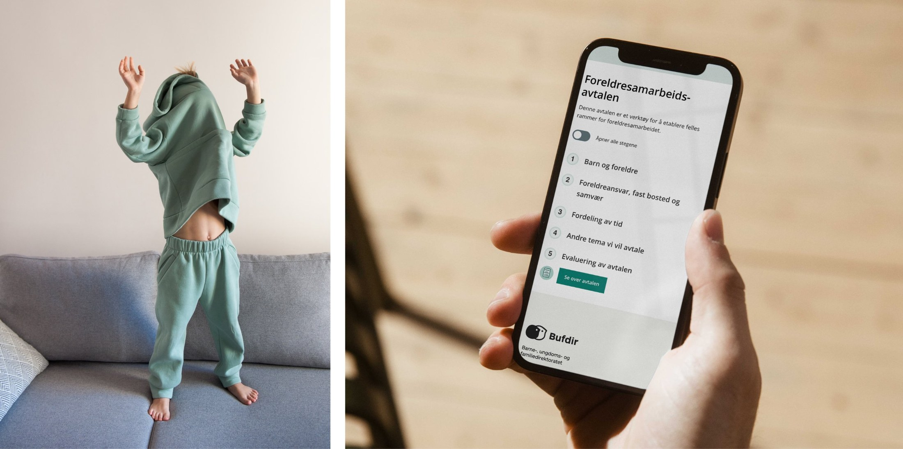
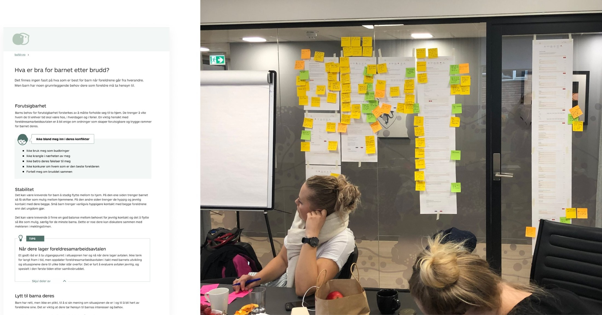

Case 01
Bufdir – Rammeavtale digitale tjenester
Jeg har hatt flere oppdrag for Bufdir. Fortløpende arbeid på bufdir.no og mer tidsavgrensede prosjekter som Kommunemonitor og Digitalt støttet mekling.
- Kunde
- Bufdir
- Min rolle
- Lead produktdesigner (UX/UI)
- Team
- Utviklere, produkteiere, redaktører, prosjektleder, innholdsdesignere
- Når
- 2016 – 2023

Min rolle og fokus
Som lead produktdesigner for Bufdir var jeg opptatt av å ivareta den helhetlige brukeropplevelsen for brukerne, selv om oppgavene jeg skulle løse kunne komme som et eget avgrenset prosjekt, ofte med andre produkteiere og ressurser fra andre deler av organisasjonen.
I løpet av et liv kan man møte Bufdirs tjenester flere ganger, og ofte i en svært sårbar situasjon. Da er det spesielt viktig at innholdet er skrevet slik at det er lett å forstå, og at det er lett å finne frem og utføre oppgaver.
Kommunemonitor
Med et fullt utviklerteam designet jeg «Kommunemonitor», et digitalt verktøy for alle norske kommuner, fylkeskommuner, statlig forvaltning og politikere, samt interesse- og brukerorganisasjoner.

Problemet
Bufdir trengte et verktøy for å synliggjøre ulikheter, utjevne forskjeller og øke samarbeid og læring mellom kommunene innenfor områder som barne- og familievern, likestilling og overgrep i nære relasjoner med mer.
Svært store mengder data skulle vises på en måte som var universelt utformet og enkel å bruke for dem som skulle bruke den i arbeidet sitt.

Designprosessen
Jeg jobbet tett med produkteier underveis i hele prosessen. Hun hadde mye kunnskap om hva slags statistikkfremvisning som ville egne seg best for ulike typer data.
Backend-utvikleren var tett på, blant annet med innsikt i hva slags data vi hadde tilgjengelig. Frontend-utvikleren var også med i utformingen, blant annet ved å finne gode diagrambibliotek vi kunne ta utgangspunkt i.
Jeg startet med å utarbeide trådskisser som jeg brukertestet sammen med produkteier. Vi fikk nyttige tilbakemeldinger om hvordan valg av fremstillinger og interaksjon fungerte.
Visualiteten var ekstra spennende å jobbe med. Å fremstille store mengder statistikk på en universelt utformet måte er utfordrende. Jeg brukte plugins til å teste fargekontraster, og vi la til mønstre som skulle skille de ulike verdiene fra hverandre med mer enn bare farger.

Læring og resultat
Monitoren har gitt verdi. Blant annet kommer det frem i rapporten «Brukerundersøkelse barnevern 2021» fra Direktoratet for forvaltning og økonomistyring (DFØ) at Barnevern kommunemonitor får høy skår av barnevernslederne. Sammen med samlesiden for barnevernsreformen er dette blant de mest verdsatte digitale verktøyene fra direktoratet.
Sammen med resten av teamet mottok jeg diplom under Visuelt 2019 for dette arbeidet.
«Dette verktøyet tar tak i et viktig område: å tilgjengeliggjøre data og informasjon i det offentlige på en transparent og dynamisk måte.
Verktøyet lar deg også velge data til sammenligning på tvers av kommuner, som kan bidra til en ny måte å jobbe sammen på - utover deling av endelige resultater. Et viktig verktøy i arbeidet med å profesjonalisere kommune-Norge.»
Digitalt støttet mekling
Sammen med en innholdsdesigner, en interaksjonsdesigner, en jurist, to meklere og flere utviklere bistod jeg Bufdir som lead produktdesigner med å digitalisere meklingen mellom foreldre i samlivsbrudd. Med teamet og samarbeidspartnere vant vi DOGA-merket i 2018 for dette arbeidet.

Problemet
Bufdir ønsket å forbedre meklingsprosessen mellom foreldre med felles barn som skulle gå fra hverandre. De hadde allerede et enkelt digitalt skjema som kunne fylles ut, men uten innlogging og mulighet for lagring.
Det var et problem at foreldre ofte ikke forstod avtalen, hvilke konsekvenser valgene de tok ville få, og fokus på barnas beste forsvant i foreldrenes egen emosjonelle og vanskelige reise.

Designprosessen
I arbeidet med å forbedre meklingsprosessen for foreldre, meklere og barn, var det viktig å sette seg inn i deres perspektiv. Vi fikk observere under mekling, og vi intervjuet foreldre og meklere.
Med innsikten vi tilegnet oss utformet vi skisser som ble testet både av meklere og av foreldre i mekling. Skjemaet ble utformet med mer innhold enn det man gjerne anbefaler, men det var viktig å informere underveis når foreldrene tok ulike valg, slik at de skulle forstå konsekvensen av valgene de tok.
Det var også stort fokus på barnas stemme og behov i utformingen av skjema og tilhørende sider. Dette gjorde vi gjennom bruk av illustrasjoner og tekster.

Læring og resultat
Den nye løsningen opplevdes bra for foreldrene, men meklingskontorene hadde en lengre periode ikke mulighet til å bruke avtalen på sine maskiner på grunn av personvern og sikkerhet. Krav til utstyr på meklingskontorene burde vært utredet tidligere i prosessen.
Hva jeg har bidratt med
- Leveranser
-
- Designmetodikk og prosesser
- Designskisser
- Forankring
- Prototyper
- Innsikt
- Brukertesting
- Komponentbibliotek og designsystem
- Designtokens og variabler
- Universell utforming
- Personvern
- Smidig utvikling
- Verktøy
-
- Figma
- Sketch
- InVision
- Miro
- Azure DevOps
- Optimizely
- Axe DevTools
- IBM Equal Access Accessibility Checker
- Siteimprove